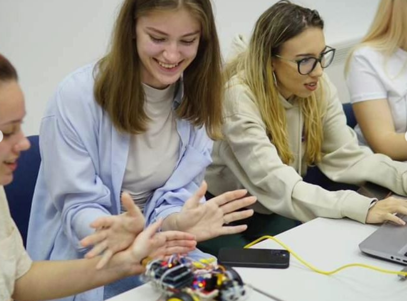

About Me
Who am I?
I'm 23 years old, and I proudly call Zenica my hometown. Technology has been my thing since forever, and my passion for it keeps growing. This portfolio website is a window into my world, where I share not only my professional journey but also a glimpse into my hobbies and interests. It's a space where I showcase my skills and experiences, both from the tech world and my personal endeavors. While this site offers a sneak peek, there's so much more to explore and discuss, and I'm looking forward to sharing those stories, experiences, and insights during our chats and interviews. Let's keep some surprises in store!
My artistic soul
Besides technology, another constant in my life has been art. I attended both a music school and ballet classes. I play the violin, piano, and guitar, and I used to dance ballet. These creative pursuits have added a rich layer to my life, where I find inspiration and balance.

Despite my numerous travels and participation in various competitions, one particular memory stands out — Moscow International Festival of Slavic Music. It's a moment I hold dear and always cherish, because I was awarded a special prize.
Even though everyone believed I would build my career in the arts, things took a slightly different
turn.
Despite the seemingly opposite worlds of the artistic realm in which I once lived and
today's
coding universe, I've always convinced people that coding is a form of art for me. It's the
harmonious blend of systematic chaos, much like art.
My free time
When I had to leave ballet, which had been my primary artistic focus, I redirected my
attention, especially during high school, to youth organizations.
I realized just how
many
life
lessons we never learn in traditional classrooms, so I shifted my focus towards developing my soft
skills, which were lacking, and engaging in activism.

Among the numerous organizations, one captured my attention the most.
To which I dedicated
the most time, and which undoubtedly taught me the most about soft skills, is the European Youth
Parliament.
Drawing from my experiences in various organizations, I continue to invest my free time in opportunities that help me grow both personally and professionally. I'm dedicated to building my soft skills and technical expertise, bridging the gap between classroom knowledge and real-world experiences. It's not just about expanding my own knowledge; I'm also passionate about connecting with industry professionals who generously share their insights, provide guidance, and open doors to continuous learning. Their mentorship helps me learn from their successes and setbacks, and it's a journey of shared experiences and common interests. Together, we're not just dreaming but turning our visions into reality. One of them is IT Girls Bosnia and Herzegovina.
I've participated in numerous events as a delegate in various committees, including the Committee on Economic and Monetary Affairs, Culture and Education, and Legal Affairs. I've also taken on roles as a CR and PR organizer, led Understanding Europe crash courses, and reached the pinnacle as a local office coordinator.
Besides tackling various legal issues and understanding the intricacies of EU and B&H
operations,
I've also acquired skills in project proposal writing, effective teamwork.
I've
honed
my English
language proficiency. These experiences have enabled me to take significant strides in
communication
and also problem-solving.
IT Girls
I've had the pleasure of taking part in several events organized by amazing women in Bosnia and Herzegovina. These experiences have been a fantastic learning journey, where I acquired various skills and honed my technical knowledge. Additionally, I have participated in mentoring programs twice as a mentee and attended the Smart Automation boot camp.
Hackathon

One of the standout experiences I must highlight is the Reconnect Hackathon, held in October 2022. It was an unforgettable event where my team, "Code of Duty," clinched the second place.
We leveraged our academic knowledge in software analysis and design while venturing into uncharted territories. The Reconnect Hackathon pushed us to explore new technologies, like Swift, for the first time. We faced the challenge of understanding and solving a real societal issue within a tight timeframe, a unique experience that expanded our horizons.
Work experience

During my final year of college, I had the opportunity to undertake a mandatory internship.
I
spent
one month at BH Telecom in directorate Zenica, working in the Department for Technical
Support, specifically
within the
Office for Access
Networks and Terminal Equipment.
During this internship, I also worked in the team of Communications Solutions and
Preparation Office, participating in optical cable testing, and even engaging in fieldwork.
Besides
gaining various technical skills, this experience provided insights into how a large corporation
operates.
It highlighted the significance of documentation and archives, which were topics we
theoretically
covered during my college studies.
I'm particularly thrilled about the skills I gained through various group and individual projects. These experiences introduced us to agile methodologies and version control, enhancing our ability to manage software development effectively. Alongside the multitude of programming languages, we explored a diverse set of tools and platforms for the entire software development lifecycle. From designing in Figma and 3D modeling tools to web development using Java Spring Boot, Node.js, and React, we ventured into MySQL for database management, .NET MAUI for mobile app development, and utilized tools like Visual Paradigm for software development and documentation. We also dabbled in systems and network administration, and manual and automated testing in Selenium among other subjects. Despite the extensive curriculum, it provided us with a solid foundation for our future endeavors.
Academics
Throughout my studies at the
Polytechnic Faculty, I acquired an array of technical skills,
delving into various programming languages.
Some of them: C++, C#, Python and Java.
Exploring
topics about
web development and mobile app development, as well as agile methodologies and
design. However, what
intrigued
me the most were embedded
systems, which ultimately became the theme of my graduate thesis.
Specifically, my graduate thesis revolved around the concept of a smart home. Using Arduino and the Blynk IoT application, I designed a prototype of a smart home with features such as mood light control, heating, ventilation, plant irrigation, and an alarm system. This project allowed me to apply my programming and hardware skills to create a real-life, interconnected home automation solution.
My hobbies
In my spare time, I'm not one to let the minutes slip away. Always on the lookout for exciting new hobbies that can add a spark to my life. I find joy in the little moments of discovery that life offers.
Given my status as a "polyglot" (strictly in the context of programming languages), I thought, "Why not extend that talent to human languages?" Learning new languages has become one of my quirky hobbies. At the very least, it should help me enjoy Netflix without relying on subtitles, even if I can't travel to all those exotic destinations just yet!
One of my more recent hobbies is sewing.
It's a delightful blend of creativity and
environmental
consciousness. With each stitch, I'm not just crafting something beautiful, but I'm also making a
statement about sustainable fashion. It's a small step toward a more eco-friendly and stylish world,
and I'm excited to explore the endless possibilities it offers.
Every day, I strive to grow and learn in every aspect of life. Despite not having extensive work experience, I believe in my ability to quickly adapt, learn, and excel, which I consider one of my strengths. While I may have some gaps in practical technical knowledge, I'm confident that I can be a valuable addition to any team and that there's a world of opportunities for growth that I'm eager to explore.
I'm also an enthusiastic fan of crosswords, quizzes and Formula 1. But I'm also an avid consumer of films, series, books, and music, either in the company of friends or enjoying some me-time. I firmly believe that how we spend our free time greatly impacts the quality of our lives. So, I make it a point to engage in activities I love, unwind and constantly learn about topics beyond my profession.
Personality Assessments
In a nutshell, I believe these tests are valuable indicators of personal and professional development. Despite being conducted online, I have found them to be quite reliable!
These assessments have provided me with insightful self-reflection. It's intriguing how these descriptions offer a fresh perspective on my character and the potential career paths that could be a perfect match. While I don't take them as definitive, they serve as valuable tools for self-awareness and growth.
Career Aspirations
Currently, I am open to exploring a wide range of career opportunities within the field of software engineering. I embrace the idea of versatility and am not hesitant to venture into any career path that aligns with my passion and expertise. I firmly believe that every opportunity, regardless of its specific focus, has the potential to be a stepping stone in my journey.
My plan for the future is to pursue a master's degree in software engineering, allowing me to complete the bigger picture. Along the way, I aim to gain valuable work experience to further develop my technical skills, and to explore different facets of the industry to find the path I'd like to commit to in the long run.
While my studies have exposed me to a broad spectrum of topics, a few areas have particularly piqued my interest: Embedded systems and the Internet of Things (IoT) and I've delved into diverse back-end development techniques for various types of applications. While I'm increasingly drawn to AI, I acknowledge that I may not yet possess the depth of knowledge and experience required to prioritize it as my sole focus.